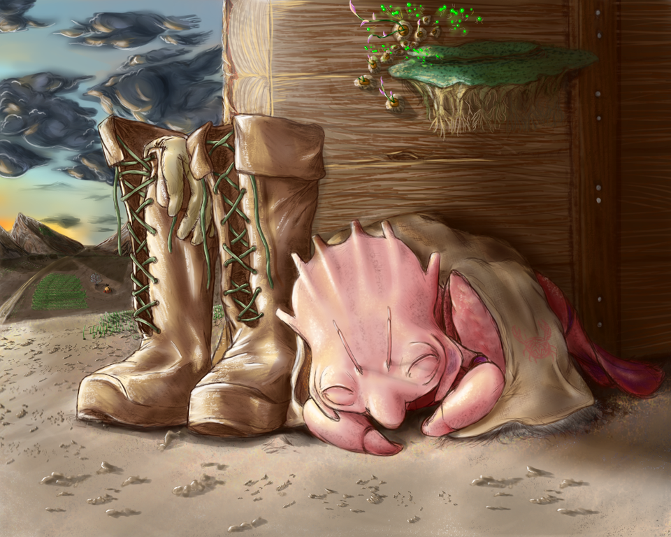

Shallan Davar acaba de llegar a Kharbranth, la Ciudad de las Campanas. Experimenta un choque cultural,
asombrada por la cantidad y variedad de gentes de la ciudad.
Tras una breve conversación con el capitán Tozbek del Placer del Viento, el barco en el que llegó, le
comunican que Jasnah Kholin, la mujer a la que lleva persiguiendo varios meses, sigue en la ciudad.
Shallan y uno de los marineros del capitán Tozbek, Yalb, hacen el viaje hasta el palacio para que Shallan
pueda hablar con Jasnah. Cuando llegan, ella le pide a Yalb que la espere fuera del palacio. Se desvela que
Shallan había solicitado ser la pupila de Jasnah, y que esta le dijo que se reuniera con ella en Dumadari.
Desde entonces, Shallan la persigue de ciudad en ciudad.
Shallan está muy nerviosa, ya que la situación económica de su casa está en ruinas desde la muerte de su
padre, y si no encuentra alguna fuente de ingresos u otros medios para controlar las casas políticas
rivales, su casa no durará mucho. También revela que su petición de ser la pupila de Jasnah está relacionada
de algún modo con la resolución de la crisis de su casa, aunque no aclara cómo.
El capítulo termina con Shallan doblando una esquina y viendo a Jasnah.
Cuando Shallan conoce a Jasnah Kholin por primera vez, admira a Jasnah como la belleza ideal: alta, de piel
bronceada alezi, con una larga melena oscura. Está hablando con un hombre que Shallan identifica más tarde
como el rey Taravangian de Kharbranth.
Jasnah y Taravangian parecen estar negociando algo, aunque Shallan no puede saber qué. Cuando empiezan a
caminar, Jasnah le hace señas a Shallan para que la siga. Tras una conversación preliminar, Jasnah menciona
que, como Shallan ha sido tan persistente en buscarla, escuchará su petición de ser su pupila. Shallan se
sorprende, pues creía que ya había sido aceptada como pupila de Jasnah.
Jasnah funde el alma de la piedra, transformándola en humo. El rey recupera a su nieta y, cuando se lo pide,
acepta llevar a Jasnah al Palaneo.
Jasnah rechaza a Shallan como su pupila por su falta de educación en historia y filosofía. Shallan se siente
frustrada, pero decide perseverar. Es entonces cuando Shallan revela que desea convertirse en la pupila de
Jasnah, no por afán académico, sino para robarle el moldeador de almas y así ayudar a la recuperación de las
finanzas de su familia.
